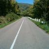

sharpton.txt
 orality
orality hunger, food, grain, fruited
 general_sensation
general_sensation beautiful, beautiful, beautiful
 expressive_behavior
expressive_behavior played, sung
 vision
vision regardless, watched, observed, look, view, brown, ray, ray, amber, ray
 social_behavior
social_behavior guests, protect, appealing, say, protect, election, convinced, say, say, convinced, election, commit, told, education, promise, promise, says, education, promise, promise, promise, promise, aids, promise, promise, protected, election, elections, preach, tell, committed
 temporal_references
temporal_references tonight, years, ago, time, years, ago, years, ago, again, tonight, tonight, occasions, during, season, time, when, tonight, time, when, when, years, year, years, everyday, every, often, tonight, weeks, ago, everyone
 moral_imperative
moral_imperative honored, rights, rights, rights, principles, justice, rights, rights, rights, right, rights
 hard
hard crispus, solidarity
 water
water shores, brooklyn
 timelessness
timelessness century
 height
height spirit, hunger, mountains, above
 concreteness
concreteness at, where, at, far, center, at, at, at, here, at, point, over, at, toward, at, here, over, at, here, here, spacious, here
 passivity
passivity secure, die, security, beds, retirement
 unknown
unknown odds
 voyage
travel, immigration
 random_movement
random_movement waves
 instrumental_behavior
instrumental_behavior assembled, selma, risk, attempts, winning, founded, results, soldiers, record, available, gains, spend, buy, afford, work, afford, making, product, worker, making, making
 aggression
aggression fought, threat, fought, war, fighting, hostility, hatred, fight, weapons, destruction, weapons, war, critical, fighting, brutality, attacks
 restraint
restraint must, policy, policy, police, policy, must
guests, protect, appealing, say, protect, election, convinced, say, say, convinced, election, commit, told, education, promise, promise, says, education, promise, promise, promise, promise, aids, promise, promise, protected, election, elections, preach, tell, committed